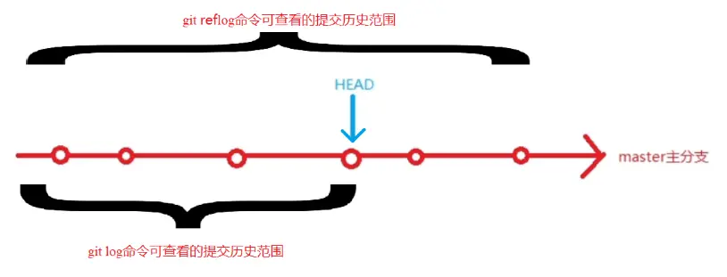

1. 结构：

参考： https://www.zhihu.com/question/38305012
可见：
fech获取时，并未合并到本地仓库
--------> 推论：cherry-pick需要的commiId，可以利用fech获取
2. git
git reflog -----------历史上所有的commit（即使被删除了、即使被修改了）
记录了所有引起HEAD指针变化的原因：真正commit、或reset、或checkout 或 pull 或 merge 或 clone
如何读reflog？
（1）新增一笔提交 7ace9e6282a9
（2）reset: moving to 4bd4cf2ac7dd （
自然from 7ace9e6282a）（3）cherry-pick test 节点（
自然，形成新节点）

范围：

参考： https://www.jianshu.com/p/7e4cef3863e7
git commit 技巧：
git commit --amend --no-edit -----> 不会弹出commit message (reusing the previous one)
在 bash中自定义 见《任意ide（As 或 clion 等）, 默认 Terminal 如何使用 bash?》
//.myfunction.sh
#!/bin/bash
#git_rebase
function g_pu0 {
export a=$(git rev-parse --abbrev-ref HEAD) #
git.exe push --progress "origin" $a:$a #注意第一个a是本地分支名，第二个是远程分支名: feature/xa_powerterminal:feature/xa_power
}
function g_pul {
export a=$(git rev-parse --abbrev-ref HEAD)
git.exe push --force-with-lease --progress "origin" $a:$a
}
function g_re_f{
#获得某个分支所对应的远程分支
export a=$(git rev-parse --abbrev-ref --symbolic-full-name @{u})
git.exe fetch -v --progress "origin"
git clean -d -fx
#git fetch --all
git reset --hard HEAD~5 #仓有问题的话,有垃圾文件,直接 rebase 远端,可能会冲突。先 reset 本地--->强制
git reset --hard $a #仓有问题的话,有垃圾文件,直接 rebase 远端,可能会冲突。先 reset 本地--->强制 rebase
remotesBranch="remotes/"$a #shell拼接字符串
git rebase $remotesBranch
}
function g_re{
#获得某个分支所对应的远程分支
#git fetch --all
git.exe fetch -v --progress "origin"
export a=$(git rev-parse --abbrev-ref --symbolic-full-name @ {u}) git rebase $remotesBranch
remotesBranch="remotes/"$a
git rebase $remotesBranch
}
function g_co{
git commit -m "修改"
}
function g_he{
echo "git.exe fetch -v --progress "origin""
echo "git log-graph"
echo ": git rev-parse --abbrev-ref--symbolic-full-name @{u}"
echo "dos2unix unix2dos filename"
echo "删除 git 没有track的文件:git clean -d -fx"
echo "git checkout -b feature/master_enterprise2 remotes/origin/master"
echo "推送： git push -u origin feature/master_local:main -f; 本地分支：远程分支获取：git branch -a"
echo "=========commit==============="
echo "git commit -m "TraceNo.:REQ20220“"
echo "git commit --amend --no-edit -----> 不会弹出commit message (reusing the previous one)"
echo "删除某个commit: git rebase -i 9fd15a8880fc41290d7dc^ 修改pick为drop"
echo " commit: git rebase -i HEAD~4 s"
echo "任意调整 commit顺序、任意合并: git rebase -i commitID,id之后的所有commit"
}
function g_st {
git status
}
function g_fe {
git fetch
}
function g_co_am {
git commit --amend
}
总结:
git restore 文件名
会撤销到缓存区(如果有,add区域) 或者 当前版本库版本(commit区)
git命令回退 某个文件 到指定的版本：
git chekcout 版本号 文件
如何合并？TODO
git大文件：
git Ifs pull // 下载大文件
git lfs uninstall
管理:
硬件十几个人对软件一个人,提十几个单,修改txt
----------> 应该让硬件出一个人,软件只对接这个一个人。硬件单提一个
2.1. 两个节点之间差异
git diff 8064cff987043e2272746a46e3240e4ea7336e5b 3e62c71ee5dd6c714fc0bdeaa7faf0a2aa226e91 > /1111.txt
两个节点之间差异, 提取所有文件名:
git diff 8064cff987043e2272746a46e3240e4ea7336e5b 3e62c71ee5dd6c714fc0bdeaa7faf0a2aa226e91 --name-only >./1111.txt
2.2. 本地有代码修改，如何 rebase 主干(或其他分支):
方法一: 新建一个分支(可行):
git fetch (必须把远端的拉下来)
git checkout -b feature/sh_c111111_x214 remotes/origin/master
pick之前分支的修改
git fetch (把远端的拉下来,本质: 拉到本地,但是没有合入到本地, git log 不变---》git fetch 对代码没有任何影响)
git rebase origin/master (当前分支的base,同步到本地的 origin/master)
验证:git log, 代码跟新到新, 而且自己的 commit 在第一个
方法三: 命令的小乌龟界面操作:
拉取+小乌龟界面rebase (找到 head origin,右键 rebase)
2.3. git push
提交代码：
git.exe push --progress "origin" 本地分支:远程分支
本地分支:远程分支 由 git branch -a 查得
注意：
没有本地分支时（安卓开发中多见），提交代码：
git push origin HEAD:refs/for/branch_master
----》以HEAD替代本地分支？
2.4. 配置git + 查看已经配置
参考： https://blog.csdn.net/lovedingd/article/details/121288974
主要配置有：
1、user.name、user.email
2、proxy配置
查看配置：
1、git config --list
2、 .gitconfig文件
2.5. 关于git push 443链接 报错：
fatal: unable to access 'https://github.com/KentTJ/-book.git/': Recv failure: Connection was reset
或
fatal: unable to access 'https://github.com/KentTJ/-book.git/': Failed to connect to github.com port 443

参考：
git config --global http.proxy http://127.0.0.1:7890
git config --global https.proxy http://127.0.0.1:7890